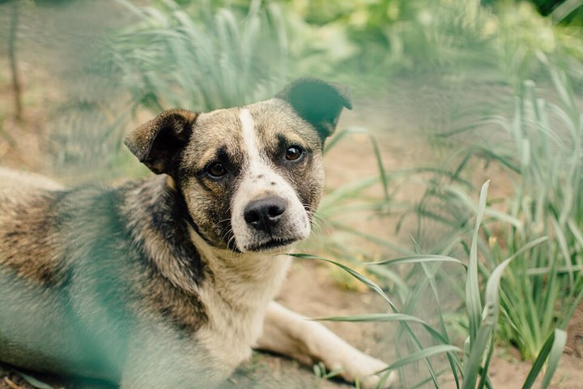
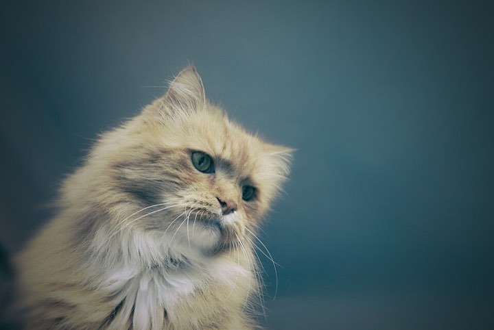
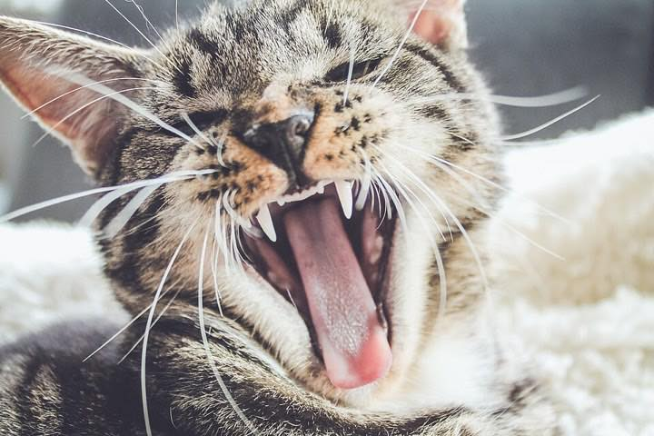

Nugget
Puppy, 4 months
Small, fast and always happy. Nugget wants to chase every ball he sees.
Energy
Cuddles
Pick a tab to meet our dogs, cats and small pets. The bars show how much energy each one has, and how much it loves cuddles.
Puppy, 4 months
Small, fast and always happy. Nugget wants to chase every ball he sees.
Energy
Cuddles

Dog, 6 years
A calm and gentle dog. Maple loves long walks and naps in the sun.
Energy
Cuddles
Every dog needs a walk every day, and fresh water all the time.
Never give a dog chocolate. It is poison for dogs.

Cat, 3 years
Fluffy and a little shy. Saffron likes quiet rooms and a soft brush.
Energy
Cuddles

Kitten, 5 months
First Yoyo yawns. Then Yoyo plays with a string for a whole hour!
Energy
Cuddles
Cats love to scratch. A scratching post keeps their claws healthy and saves your sofa.
Cats also like a high place where they can sit and watch.

Rabbit, 2 years
A rabbit with floppy ears. Toffee munches hay all day long.
Energy
Cuddles

Guinea pig, 1 year
Peanut squeaks "wheek wheek!" when he hears his food coming.
Energy
Cuddles
Rabbits and guinea pigs feel happier with a friend of their own kind.
Sit on the floor and let them come to you. They feel safest with all four feet on the ground.